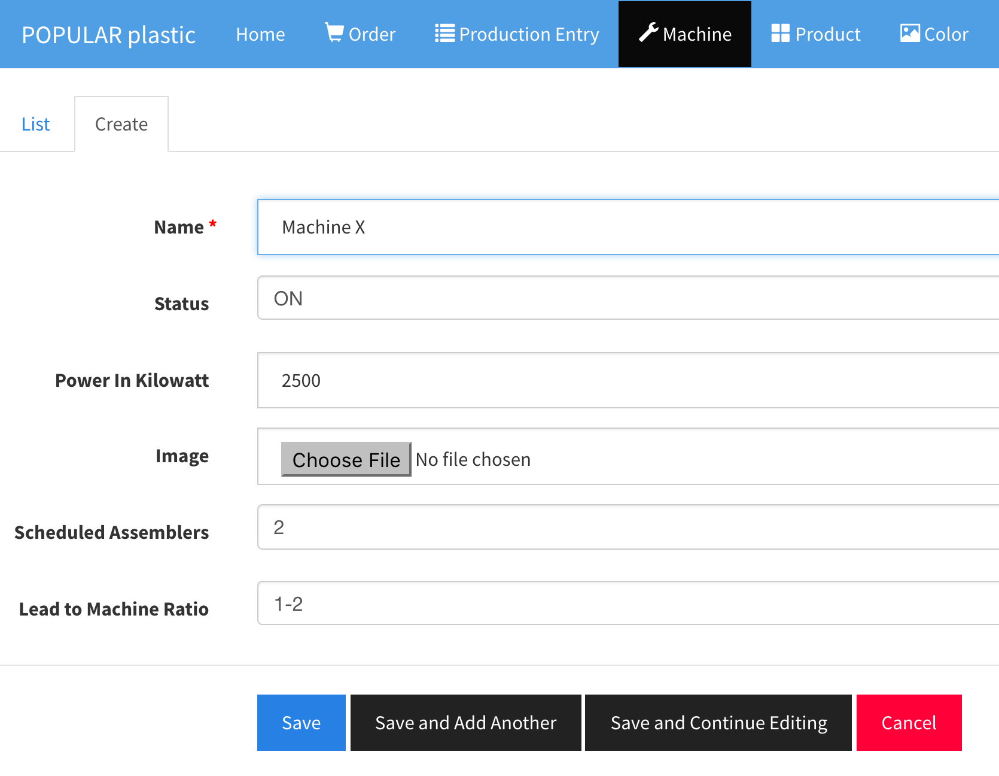
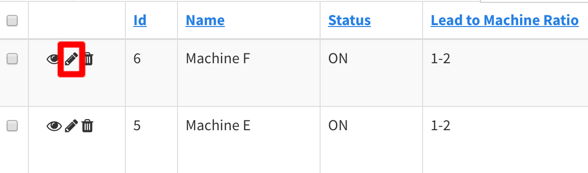
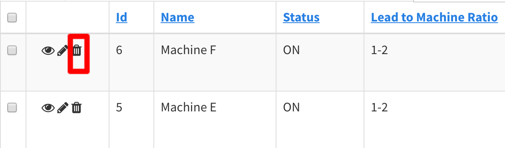
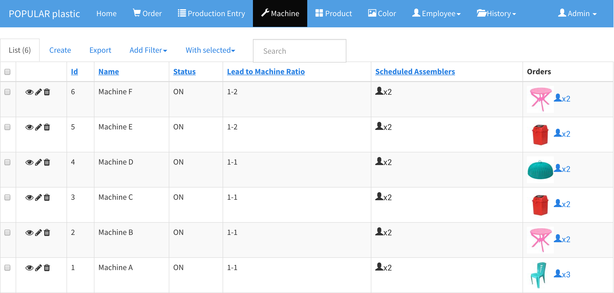

Machine
Machines are required for the order and production entry creation, and team scheduling.
Add New Machine
In the Machine section, click on Create tab.
- Machine name should be posted on the actual machine so that the user can match during the data entry.
- Status
- ON
- OFF (shut down to save power)
- BROKEN (currently fixing on the issues)
- NOT_IN_USE (No longer used or deprecated)
Team Requestuses all the machine except the ones with theNOT_IN_USEstatus.- Machine photo field is optional.
Scheduled Assemblersis the total number of assemblers to be used in theTeam Requestprocess a.k.a. scheduling.Lead to Machine Ratiois the ratio of how many machines that you want to assign to a lead. Example: 1-2 meansone lead - two machines.

Update Machine
Click on the pencil icon to edit a machine details.

Delete Machine
Click on the bin icon to delete a machine.

List Machine
List all the Machines. There are some important columns to notice:
Scheduled AssemblersColumn
This column shows the number of scheduled assemblers (workers). The Team Request [Employees > Team Request] uses this number to form a team. x2 means two assemblers will be assigned to that machine.
OrdersColumn
This column shows the number of assemblers of the current IN_PROGRESS order, excluding lead, required by the product. Once the order is completed, the product icon will be disappeared.
- If
Scheduled Assemblers>OrdersxN counts, that means the machine is overstaff. - If
Scheduled Assemblers<OrdersxN counts, that means the machine is understaff.
